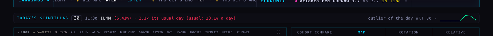
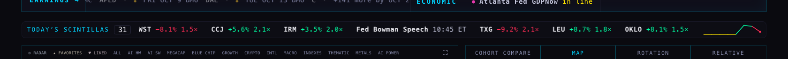
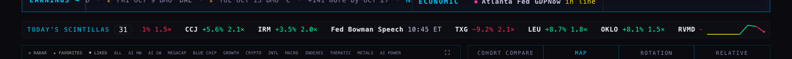
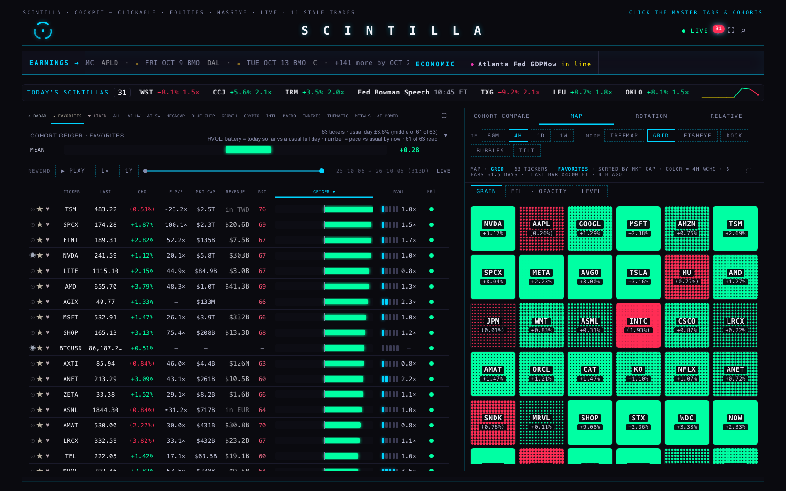
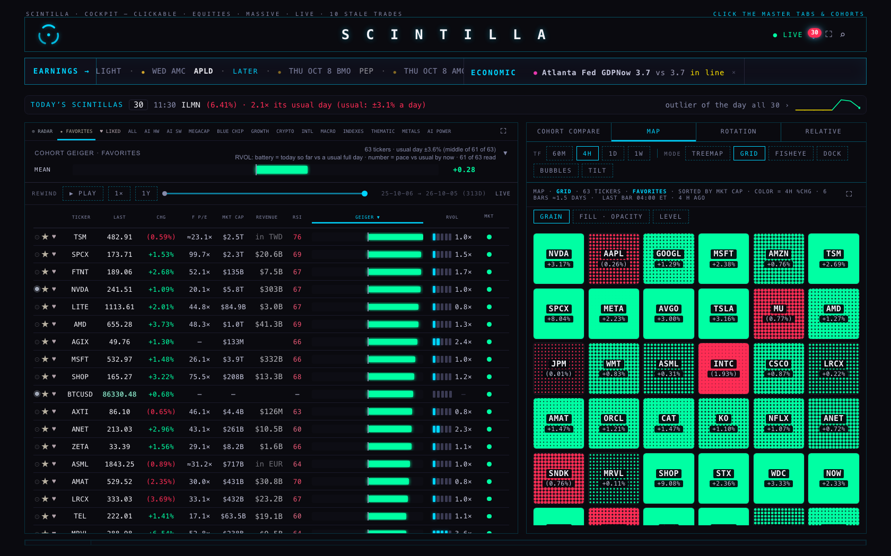
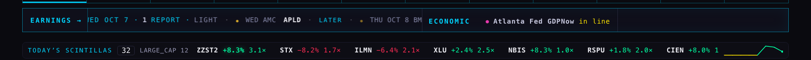
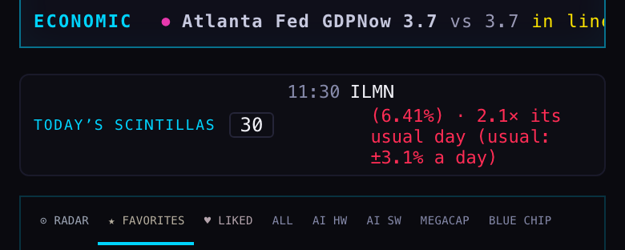
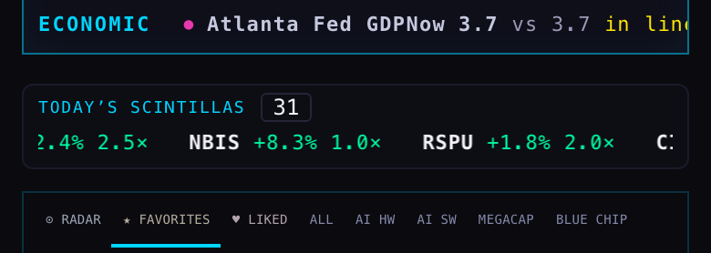
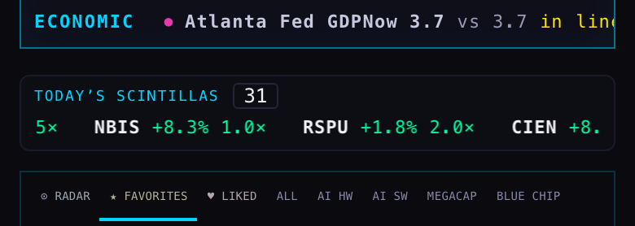
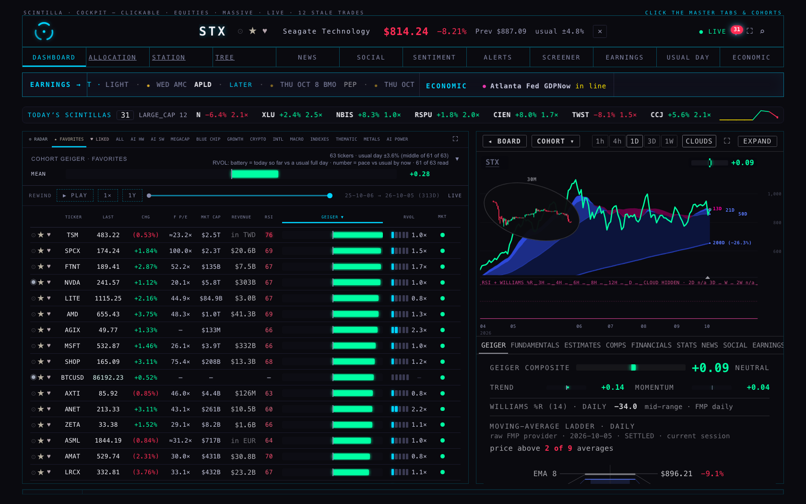

BEFORE (the live Hub, 11:36 ET)

One name fits: "11:30 ILMN (6.41%) · 2.1× its usual day (usual: ±3.1% a day) … outlier of the day · all 30 ›". The other 29 are somewhere else.AFTER (the preview, 11:41 ET)

Six or seven names at a time, moving left, all 31 of the day in turn, newest first. Each is the name, the move, and how many of its usual days that was, in the day's green or red. The count, the box and its height are the same, so nothing under it moved.ONE SECOND LATER — it moved 45 px

Same strip one second on: CCJ, IRM and the rest have each slid left by 45 px and RVMD is coming in at the right. Measured every second for ten seconds: 44.9 – 45.5 px a second, the same speed as the EARNINGS, MACRO, ALL, ECON and PREDICTION tapes (all read at 45).THE WHOLE SCREEN, AFTER

THE WHOLE SCREEN, BEFORE


"ZZST2" is a made-up name put into the preview page's memory for this picture only (nothing was written anywhere). The count went 31 → 32, the tape started over so the newcomer is the first thing you see, and its number glowed once in its green — the Hub's one existing flash. On the next refresh nothing flashed again.BEFORE

The sentence wraps to four lines; the strip is 64 px tall.AFTER

The label and count on one line, the tape on its own line under them, two names and the start of a third at a time; 47 px tall, so the board sits 17 px higher.
One second later: moved 45 px.
Clicking a name on the tape opened that company (here STX), the same company view a board row opens. A release (a Fed speech, a PMI) opens its day in ECONOMIC instead. The count still opens USUAL DAY on today.| Check | Before (live) | After (preview) |
|---|---|---|
| Names you can read at once, 1680 wide | 1 | 6 whole ones, plus the ones entering and leaving |
| All of today's on the strip | 1 of 30 | 31 of 31, in turn (one full pass takes 89 seconds) |
| Words per name | "(6.41%) · 2.1× its usual day (usual: ±3.1% a day) · outlier of the day" | "ILMN −6.4% 2.1×" |
| Speed | does not move | 45 px a second, like every other tape |
| Mouse over it | — | stops; moves again when the mouse leaves (measured: 0 px while over it, 45 px in the next second) |
| Strip height, 1680 (share of the 1050 screen) | 35 px (3.4%) | 35 px (3.4%) — the board did not move |
| Strip height, phone | 64 px | 47 px |
| Text size | 11 px | 11 px |
| Page errors · writes attempted by the test browser | 0 · 0 | 0 · 0 |
What the tape shows. Every row the detector stored today (table scintillas, the same read the strip already makes once a minute), newest first. A price move shows the stored move and the stored multiple of that name's usual day; an earnings surprise shows EPS or REV and the surprise; an economic surprise shows the printed number; a release that has not printed shows only its time.
Where "usual day" is explained. Once: hold the mouse on the strip's label. Holding it on a name says only when it first spiked ("first spike 11:30 ET").
What could be wrong. The same name can appear twice if it fired twice (the count counts both, as it does today). When no session has run today (weekend, before 09:30) the strip is the existing one line about the last session — that was not changed. The tape restarts from its beginning when a new scintilla lands; if the spark or the cohort chip changes it carries on from where it was. The flash was proved with a made-up row in the browser's memory, not by waiting for a real one.
What was not done. index.html is not changed and nothing is deployed. The preview is deliverables/20261006/scintillas-tape/preview/index.html — the Hub page plus the change (and the BACK / CLOSE pair every page in this folder carries; the pictures were taken without the pair, as the Hub itself would look). The diff for the coordinator is ST2-index.diff (four insertions: one style block, one function block, two one-line hooks). Not checked in Safari or on a real phone; pictures are headless Chromium. The tape keeps moving for people who ask their computer for reduced motion, like the Hub's other tapes.
Tests. Full Hub suite on this branch: 1950 pass, 7 fail — the 5 known ones plus two that also fail without this work and read only the unchanged page (the ECONOMIC month grid's "today" badge, and a REGIME card check). 7 new tests for the tape, all passing. With the diff applied to the page: the same 7 failures, nothing new.